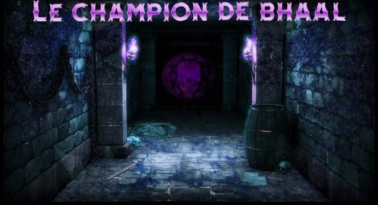
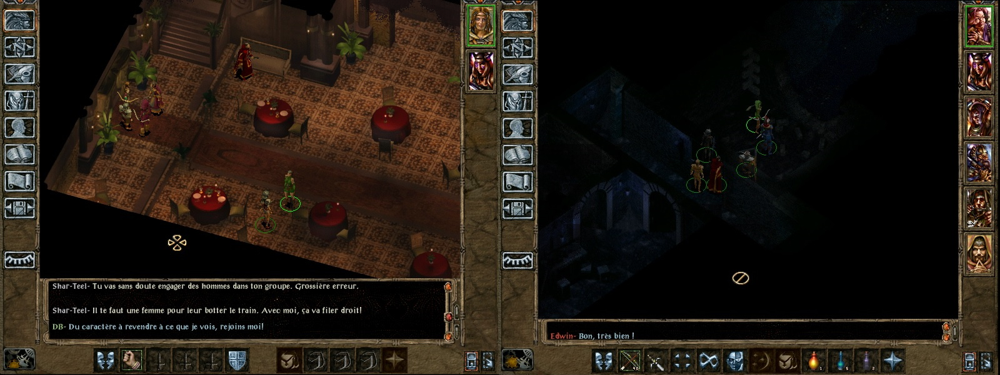
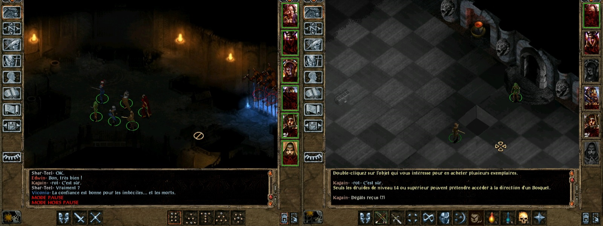

Présentation
Sarevok est mort, vous l'avez vaincu !
Les ducs font de vous le premier Protecteur de Baldur, "celui qui sert et protège le peuple".
De nombreuses aventures vous attendent, laissez moi vous conter l'une d'entre elles !

« Au bout de quelques pas, la dalle de pierre se referme derrière vous avec fracas. Vos tentatives sont vaines, la porte est bel et bien scellée.
L'invitation des lieux est claire et sans appel, vous n'avez plus d'autres choix que d'aller de l'avant.
Vous découvrirez qu'une sombre histoire s'est déroulée dans ce donjon souterrain. Mais parviendrez-vous à rassembler les pièces du puzzle et à en tirer profit ?
Osez relever le défi et avancez dans ce lugubre couloir ! »
En savoir un peu plus
- L'aventure commence à l'auberge du Heaume et de la cape où vous pourrez recruter les fidèles compagnons de BG1. Explorant un donjon entouré de mystères, vous serez à la recherche d'une sortie.
- Ce mod fait partie du futur Mod "Le protecteur de Baldur", suite de BG1 à la mort de Sarevok. Dans l'attente de sa réalisation, il ne sera pas possible de sortir de l'auberge.
- Donjon de 16 cartes pour environ 10 heures de jeu.
- Difficulté : niveau 10 environ.
- Possibilité de jouer avec sa sauvegarde ou de lancer une nouvelle partie.
- PNJ de BG1 recrutables + 3 nouveaux PNJ
• Haut de page
Compatibilité
Ce mod a été conçu sous l'environnement Baldur's Gate Trilogy (BGT). Il n'a pas été testé sur d'autres environnements.
Le champion de Bhaal est un mod WeiDU et devrait par conséquent être compatible avec n'importe quel mod WeiDU fonctionnant sous BGT.
Si vous rencontrez des bugs, veuillez contacter Cocrane ou bien poster dans le forum du Mod.
Bien qu'il ne soit pas requis pour faire correctement tourner Le champion de Bhaal, il est toujours utile d'avoir installé la dernière version du BG2 Fixpack.
• Haut de page
Installation
Mise en garde
Si une ancienne version de ce mod est déjà installée, il est nécessaire de la désinstaller d'abord. Pour cela, lancez setup_CDB.exe (ou .command si vous êtes sous OS X) et désinstallez tous les composants précédemment installés. Une fois la désinstallation achevée, supprimez le répertoire CDB et le fichier setup_CDB.exe (version Windows) avant d'extraire la nouvelle version du mod.
Lorsque vous installez ou désinstallez, ne fermez pas la fenêtre DOS en cliquant sur le bouton X ! Au lieu de cela, appuyez sur la touche Entrée lorsque l'invite de commandes vous le demande.
Par précaution, désactivez les antivirus ou tout logiciel résidant en mémoire avant d'installer ce mod, ou tout autre mod. Certains (en particulier avast et Norton !) ont une fâcheuse tendance à déclarer les exécutables des mods comme des faux positifs, provoquant ainsi l'échec de la procédure d'installation.
⚠️ Avertissement : procédure d'installation
Les Éditions améliorées sont des jeux que le développeur fait encore évoluer, notamment par l'ajout de capacités supplémentaires destinées à la création de mods et par l'ajout de contenus. N'oubliez pas que chaque patch de mise à jour effacera les mods que vous avez installés ! Ce mod ne fera pas exception à la règle.
Il y a deux options à traiter durant l'installation :
- Quand démarre le Mod ?
1: Soit à la mort de Sarevok.
2: Soit tout de suite. (à partir d'une nouvelle partie ou d'une sauvegarde de votre choix).
- Voulez-vous jouer avec les animations de créature proposées par Infinity Animation ?
Oui: Infinity Animations doit être installé. Les animations utilisées par le mod seront traitées pendant l'installation.
Non: Vous jouerez avec les animations de base.
Windows
Le champion de Bhaal pour Windows est livré et installé avec WeiDU et il est diffusé sous forme d'archive.
Vous devez extraire les fichiers de l'archive dans votre répertoire de jeu (le dossier qui contient le fichier CHITIN.KEY) à l'aide de 7zip ou de WinRAR. Une fois l'archive extraite correctement, vous devriez trouver le répertoire CDB et le fichier SETUP_CDB.exe dans votre répertoire de jeu. Pour installer le mod, il suffit de double-cliquer sur SETUP_CDB.exe et de suivre les instructions affichées à l'écran.
Vous pouvez lancer SETUP_CDB.exe dans votre répertoire de jeu pour réinstaller, désinstaller, ou encore changer des composants.
Linux
Le champion de Bhaal pour Linux est diffusé dans la même archive, sans l'installateur WeiDU.
Extrayez le contenu du mod dans le répertoire du jeu que vous voulez moder.
Téléchargez la version la plus récente de WeiDU pour Linux sur WeiDU.org et copiez weidu, weinstall et tolower dans /usr/local/bin (créez-le s'il n'existe pas). Ouvrez ensuite un terminal et allez (cd) dans le répertoire d'installation de votre jeu, lancez /usr/local/bin/tolower et répondez « Y » aux deux questions. Vous pouvez éviter d'exécuter la seconde option (Linux.ini) si vous l'avez déjà lancée une fois dans le même dossier. Pour gagner du temps, l'archive est déjà passée en minuscules, aussi il n'est pas non plus nécessaire d'exécuter la première option (passer les noms de fichiers en minuscules) si vous n'avez extrait que ce mod depuis la dernière fois que vous avez passé les noms de fichiers en minuscules. Si vous avez un doute, il vaut mieux exécuter tolower et accepter les deux options.
Tapez la commande export PATH=$PATH:/usr/local/bin , puis lancez weinstall SETUP_CDB depuis le dossier de votre jeu pour installer le mod. Puis, lancez wine bgmain.exe (ou wine baldur.exe pour les versions EE) ou et commencez à jouer.
Note pour effectuer une désinstallation complète
En plus des méthodes détaillées plus haut pour supprimer des composants, il est possible de désinstaller complètement le mod en tapant SETUP_CDB --uninstall dans une ligne de commandes, ce qui supprimera tous les composants sans devoir ingurgiter tous les messages.
• Haut de page
Composants
Le programme d'installation comprend un seul composant : le composant principal.
• Haut de page
Captures d'écran


• Haut de page
Dépannage
Si vous rencontrez un bogue, veuillez en informer l'auteur dans le forum Le champion de Bhaal. Par ailleurs, Le champion de Bhaal est disponible sur GitHub, où la communauté peut soumettre des correctifs et des modifications.
Voici quelques astuces classiques si vous rencontrez des problèmes pour faire fonctionner le jeu, avec ou sans ce mod (ou d'autres mods). Les erreurs sont souvent causées par le moteur du jeu lui-même, la manière d'installer jeu et mods, ou encore la façon de jouer. Avant d'essayer quoi que ce soit d'autre, il est recommandé de supprimer tous les fichiers des sous-répertoires /cache, /temp et /tempsave dans le répertoire du jeu pour voir si cela résout le problème.
Symptôme : le jeu se bloque ou provoque un retour sur le bureau de Windows
Quand ceci se produit, le jeu affiche parfois une erreur d'assertion (« assertion error ») dans une fenêtre pop-up, mais ce n'est pas toujours le cas. Pour que le message d'erreur complet s'affiche, ouvrez le fichier baldur.ini (qui se trouve dans le répertoire du jeu) avec un éditeur de texte (comme Notepad ou le bloc-notes). Si vous êtes sous Windows Vista, ou un système d'exploitation plus récent, et n'arrivez pas à éditer ce fichier ou à sauvegarder vos modifications, consultez ce sujet pour de plus amples informations. Vous pouvez aussi consulter cette FAQ en français.
Dans la section [Program Options] de ce fichier, tapez Logging On=1 (à moins que cette instruction ne soit déjà présente). Il est également intéressant de vérifier que l'instruction Debug Mode=1 est bien présente, ce qui permet d'activer la Console CLUA pour déboguer et effectuer des tests. Sauvegardez le fichier et refermez-le. Lancez à nouveau le jeu et tentez de reproduire l'erreur. Cherchez ensuite dans le répertoire du jeu le fichier Baldur.err et ouvrez-le avec un éditeur de texte pour analyser son contenu.
Symptôme :
ERROR: error copying [infinityanimations/content/somefile.bam]
ERROR: [SOMEFILE.CRE] -> [override/SOMEFILE.CRE] Patching failed (COPY)
Stopping installation because of error.
(with no other error message)
Ce genre de messages dépourvus de valeur informative peuvent indiquer que vous installez le mod sur un disque dur avec un faible taux de transfert de données, ou qu'un programme antivirus est actif pendant l'installation (ce qui peut aussi affecter le transfert de données). Essayez d'installer le mod sur un disque dur interne en vous assurant que la protection antivirus est désactivée pendant l'installation. Si vous n'en êtes pas certain.e, déconnectez-vous d'internet pendant l'installation (soit en débranchant votre cable, soit en déconnectant votre adaptateur wifi) et fermez tous les programmes résidant en mémoire pendant l'installation. Pour en obtenir la liste, allez dans Démarrage > Exécutez, et tapez msconfig là où est indiqué « Ouvrir : ». Cliquez ensuite sur OK. Quand l'utilitaire de configuration du système apparaît, cliquez sur le bouton de démarrage. Les seuls programmes qu'il est vraiment nécessaire de charger en mémoire au démarrage sont ceux liés à votre puce graphique (typiquement ATI ou NVIDIA). Décochez tout le reste, redémarrez et essayez d'installer à nouveau le mod. Il existe une abondante littérature sur des problèmes liés à l'installation de mods quand l'antivirus Avast est activé, alors assurez-vous bien que tous les composants d'Avast sont complètement désactivés.
Autres problèmes
Si vous avez installé plus d'un « mégamod », veuillez consulter la FAQ sur les mégamods pour y trouver des informations supplémentaires de dépannage.
Si rien de tout ceci ne résout votre problème, ou si votre problème est lié à un mod spécifique, merci de le signalez dans le forum du mod. Incluez dans votre message le contenu du fichier WeiDU.log (mis entre les balises [spoiler][/spoiler] s'il vous plaît !), ou attachez-le en pièce jointe au message s'il est trop volumineux.
• Haut de page
Crédits et remerciements
Remerciements particuliers :
-
À l'équipe de La Couronne de Cuivre pour l'hébergement de ce mod.
-
Aux créateurs de la série Baldur's Gate : Bioware et Black Isle Studios.
-
Aux membres de la Couronne de cuivre pour leur accueil et leur aide dans ce projet. Mention spéciales aux personnes ci-dessous : 🙂
- FreddyGwendo (aka Gwendolyne)
- Isaya
- Luren
- Bogda
- Dératiseur
- Faust
- Mornagest
Logiciels et outils utilisés pour la réalisation de ce mod :
Informations sur les droits d'auteur
Le champion de Bhaal n'est pas développé, supporté ni approuvé par BioWare™ ou Interplay/Black Isle, Overhaul, Beamdog ou Wizards of the Coast. Il a été développé par Cocrane et il est basé sur le jeu Baldur's Gate II et son extension.
Tout le contenu du mod appartient à ©Cocrane.
Baldur's Gate II : Les Ombres d'Amn et Baldur's Gate II : Trône de Bhaal appartiennent à © TSR, Inc. Le moteur Infinity Engine appartient à © BioWare Corp. Toutes les autres marques et droits d'auteur appartiennent à leurs propriétaires respectifs.
Ce mod a été créé pour être librement apprécié par tous les joueurs de Baldur's Gate II. Cependant, il ne doit pas être vendu, publié, compilé ou redistribué sous une forme quelconque sans le consentement de son auteur.
Veuillez noter que tout partage ou hébergement de ce mod est interdit sans la permission de l'auteur.
S'il existe des problèmes de droits d'auteur ou si cette déclaration nécessite une révision, veuillez me contacter et conseillez-moi sur ce qu'il faut faire à ce sujet. Plus particulièrement, si vous trouvez dans ce mod des illustrations susceptibles d'être en conflit avec les règles de droit d'auteur, merci de bien vouloir me le faire savoir dès que possible et je supprimerai immédiatement le contenu en conflit.
La communauté de modding sur le moteur Infinity Engine a été très active depuis plus de quinze ans maintenant, et a produit des milliers d'heures de travail non rémunérées effectuées par des fans du jeu. Les moddeurs s'efforcent de publier le meilleur de leur travail, et les joueurs bénéficient des mods les plus performants et les mieux maintenus, à condition que nous travaillions tous dans le même sens.
Mais cette harmonie peut malheureusement être perturbée, principalement par deux comportements. Le premier, c'est de revendiquer le travail de quelqu'un d'autre. Le second consiste à héberger et à redistribuer un mod sans la permission de son auteur.
Soyez assez sympa avec vos collègues joueurs et moddeurs. Ne le faites pas.
• Haut de page
Historique des versions
Version 1.1.1 - 15/06/2020
• Haut de page